全球年轻人都不咋做恨了，霹雳一声震天响，性萧条大时代忽忽悠悠就降临了。
日本作为性服务产业比较发达的地方。年轻人歇菜，老年人成风俗产业主力军了。
有的老年人是消费者，廉颇老矣，尚能饭否；
有的老年人是服务者，五斗之米，无奈折腰。
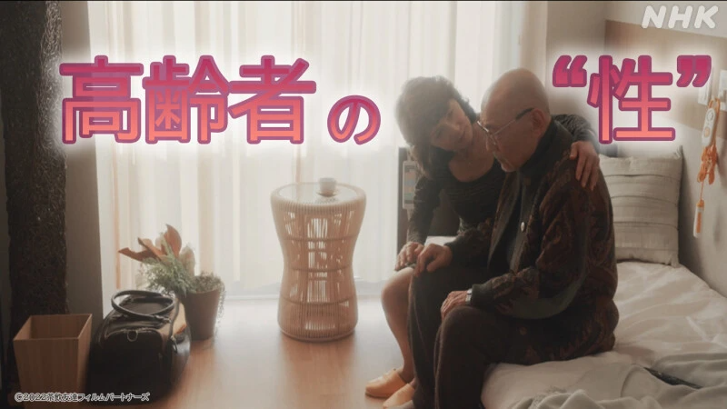
别觉得人到七老八十还有欲望这事儿很稀奇。
只要鼻子底下还喘气，就能大力出奇迹。哪怕已无法直立，吃药也要治ED。
日本老年人关乎性与爱的生活，在性产业闭环中被反复搓磨。
有老头领完养老金，直奔风俗店消费；有老太太一边领低保，一边做应召女郎。
在日本老年人的性需求与供给中，看见的却是另一种生活。
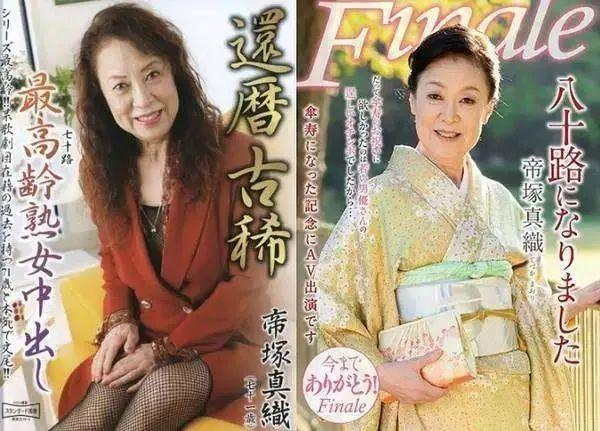
日本银发老人攻占风俗业
其实很早前，渡边淳一在《复乐园》中就说过这事儿了。
日本养老院里有老人要在放映厅看毛片儿，有老头直接叫了应召女郎上门服务，结果噶了，最后的温暖是一个拥抱。
放现实生活中，表现得就更具体了，甚至在日本老年风俗产业体系中，有一套情色消费鄙视链。
日本色情业每年收入约200亿美元，专门拍给老年人看的色情电影占整个市场的1/4左右。
需求决定供给，经济实力也影响着消费方式。
最为常见的，日本有专门服务老年人的风俗俱乐部。
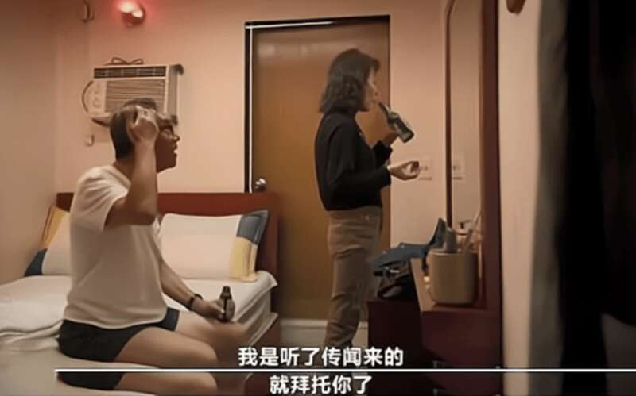
一个俱乐部的服务老年对象在1000人左右，专门给老头介绍风俗女，风俗女的平均年龄为60岁，甚至最大的达到了80多岁。
这种俱乐部又名“熟女宅”，服务模式是“老对老”。
13年的时候日本警方就捣毁了一个 有1000 名男性和 350 名女性成员“老年卖淫俱乐部”。
年龄最大的人是88岁的祖父，最年长的女人是82岁的祖母，里面的男经理也有70多岁了。
提供的服务也很细分，约会套餐60分钟6,000日元，按摩套餐120分钟10,000日元，身心排毒套餐120分钟15,000日元。另外还有5万日元12小时住宿套餐等长期套餐。
顺带一提，这类服务的服务对象不只是老年男性，还有老年女性。
这些女性的诉求并不是为了解决生理问题，家庭对她们来说是痛苦的和配偶发生关系是难顶的，所以她们的需求是想出来找一个地方，让自己感觉到像是被当成“人”一样的对待。
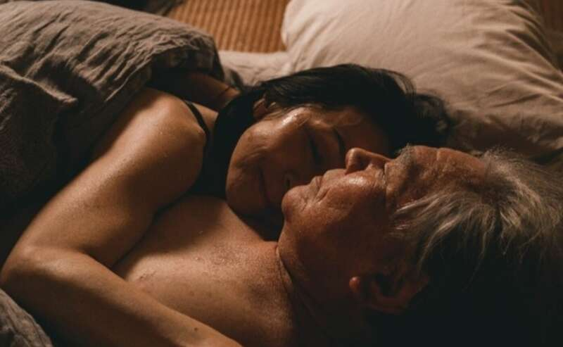
这种老年风俗业，所需要面对的各种需求里，有一项是最不容忽视的，就是有些老年人已经行动不便了。
针对这一问题，日本风俗业还推出了专门做外送服务的模式，送货上门，直配到家，足不出户能享受相应的性服务。
有的店铺界面还会温馨的挂出提示“60岁以下的顾客不得进入这家商店”。
这些店铺有的每个月能接到200个预订电话，从事这一行的服务者基本每个月都能有10个客户，高低能挣个150,000 日元，折合成人民币差不多七千三百多。
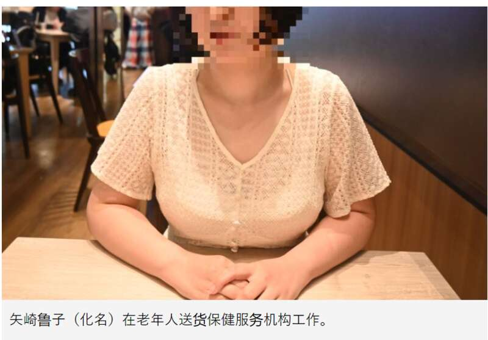
除了这种上门服务的方式之外，更有消费能力的日本老人，会找年轻的女学生、女白领。
例如风靡日本的“爸爸活”，就是由年轻女性服务中老年男性群体，以此获得相应的报酬。
从事“爸爸活”行业的也多为年轻女孩，在300万从事爸爸活的女性中，20岁年轻女性的比例高达12%，当服务老年人的时候，双方的年龄差甚至已经接近爷孙。
“爸爸活”本来只是简单的陪伴，多为提供情绪价值，但有消费能力的老人主动加钱，也难免会提供擦边性服务。
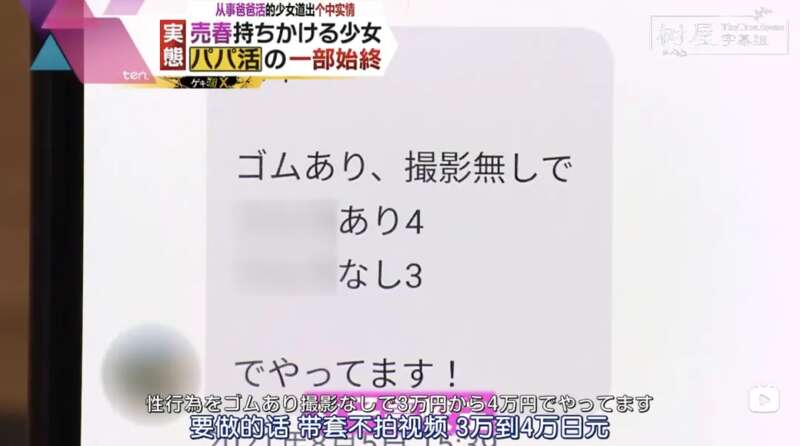
上面说的都是能有实际肢体接触的，多少都得花点圆子。
但有的日本老人本来生活就拮据，掏不出过多的钱去风俗店，就花少一点的钱去线下购买或线上观看相关影像。虽然摸不到碰不着，但也会满足些精神刺激。
而在老年AV界，有两大爆款一个是超熟女系列，另一个则是护理系列。
啥是超熟女？在日本风俗产业里，26岁+的被称为熟女，55岁+的被称为超熟女。
而年过半百还在AV界奋斗的女性并不少。
比如曾经是日本歌剧歌手，71岁在超熟女AV界再次出道的帝冢真织，直到80岁因为拍摄太过辛苦才选择隐退；
再比如61岁的富多弥悦选择和女儿一起，加入日本著名AV公司，双双下海。
这些超熟女女优们，也成为去不起风俗店的老人们，网线里的救赎。
而护理系列一般是“爷孙”配置比较多，此类视频的真正看点往往不是最后的坦诚相见。
它的必看的场景是咀嚼场景，这一幕大受欢迎的点则在于，它是少女嘴对嘴进行喂食。
不过影像这块的高低还卡了个需要会上网的门槛，那要是年纪大不会上网咋整呢，其实也有办法。
看似被时代淘汰的纸媒在此刻发挥了关键作用。
以色情内容为主的真实故事杂志的发行量正在增加，比较有代表性的有《Jitsuwa Lovers》、《Jitsuwa Knuckles GOLD》和《Jitsuwa Neo Venus》。
这些杂志基本每个月都能卖出个10万册左右，而购买这些杂志的受众都是些六七十岁住在郊区的独居老人。
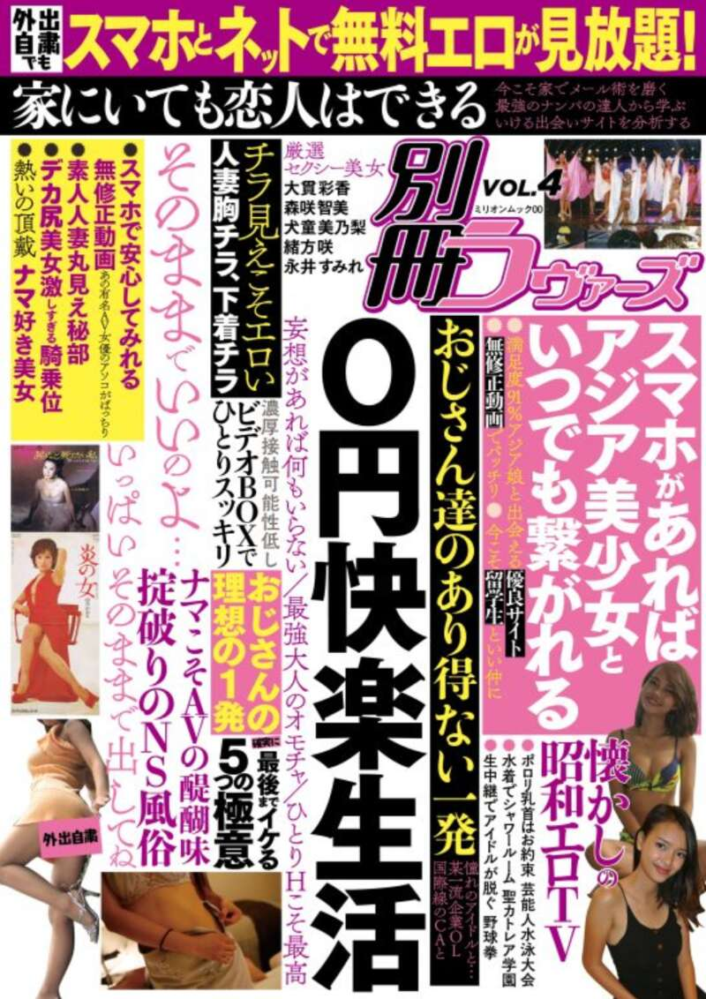
孤独和贫困，擎起了日本银发风俗业
要问为何日本老头儿迷恋风俗业？日本老太太为何花甲之年还坚持下海？
坂诘真吾在《性与超级老龄化社会：面对老年的性》一书中，从个人和社会的角度去剖析了超级老年的“性”问题。
书中指出了人到晚年所不得不面对的“三无问题”，一个是无趣，指的是性贫困；一个是无亲缘关系，指的是关系贫困，没有情感支持，也被社会孤立了；最后一个是无圆子，指的是经济贫困。
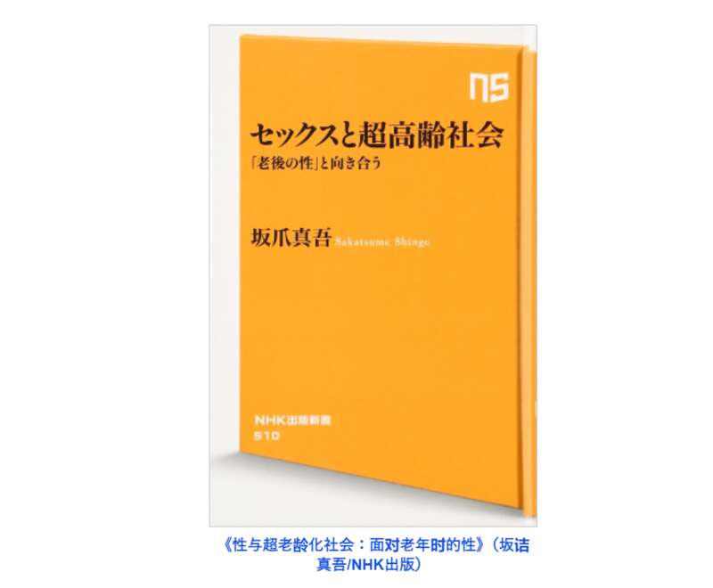
性欲作为生存意志的核心，它也是一切欲望的焦点。
书中指出“超老年的性”已经脱离的繁衍的问题，而是一种余生想要连接、交流和生存的欲望，它是漫长余生里最不可或缺的一部分。
关于这点在安藤樱在2014年主演的电影《0.5毫米》里就可以得到部分印证。
故事说的是一个年轻女护工和几个日本老头的故事。
全片围绕着日本老年人的性压抑展开，这些老头要么想和护工发生点啥，要么就是偷看她洗澡。
看起来说的是“性”实则表达的是孤独。
这些老头，有没钱的，有没媳妇儿的，有老年痴呆的，几乎都是社会里被边缘化的老人，只能靠最浅层也最刚需的性排解。
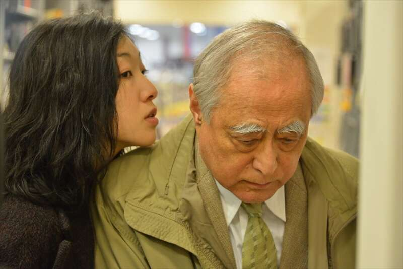
2012年，日本65岁以上老年人达3000万，占总人口的24%，因此，日本在10年前即已进入“超老龄社会”。
这么一看，日本老年人所面临的三无问题里，前两点可以放在一起讨论，说白了就是孤独。
在这种孤独的前提下，在日本约600万独居老人中，0.001%的人会首次结婚或再婚。
即使有配偶，20% 的男性和 60% 的女性也会在 75 岁时经历分居或丧亲之痛。
情感上的无依无靠成了日本老年人孤独的源头，与此同时，经济上的贫困让他们的老后生活，更加艰难了。
日本作家藤田孝典曾写过一本书名为《下流老人》，聚焦的是日本社会里收入微薄、无力养老、没有存款的贫困老人们。
在书中，藤田孝典写到：“1968年，日本政府打造出‘一亿中产阶级’的概念只是幻想，现在日本社会只有‘极少数富裕阶级’和‘大多数贫困阶级’。不久之后，日本将迎来‘老后破产’的时代”。
如今，日本的“老后破产时代”已经降临，没有足够养老金的日本老人在摇摇欲坠的生活里艰难度日，甚至很多老人还因此走上了犯罪道路。
2012年日本贫困人群主要集中在10~24岁的青少年和65岁以上的老年人。
相比较青少年，老年人的贫困率更为显著，而在老年人当中女性贫困率又高于男性。
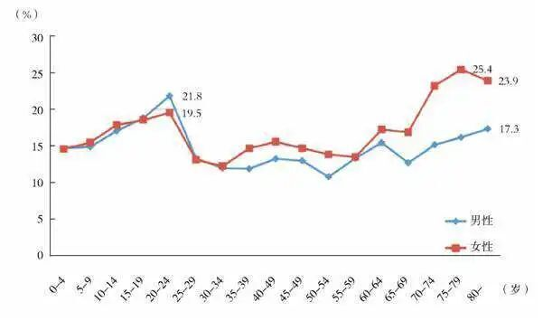
《朝日新闻》曾披露过一组数据，在日本20-64岁的单身女性里，每三个人就有一个人在国家贫困线下，而65岁以上的日本女性，贫困率更是高达47%。
日本的养老金体系对女性十分苛刻，日本的养老金制度是为传统的家庭模式设计的。
这种家庭模式一般是由薪水较高的男性和一个全职家庭主妇构成，因此已婚夫妇的养老金会较高，而离婚的女性只能拿到微薄的养老金。
没有钱的她们还要去和年轻人竞争所剩无几的岗位，老年进入职场已经十分艰难，大多也只能做时薪很低的临时工，无法过活。
而选择下海加入风俗业或是拍摄AV的日本贫困老年女性，却也不会更好过。
一位69岁的风俗从业者，赚钱是为了养老公，她每周要接待12-20个顾客，其中还有一位每月都来的93岁老头。
超熟女女优们也没有太长的工作花期，一般在拍摄10部左右影片时，就会成为公司的弃子，无钱可赚。
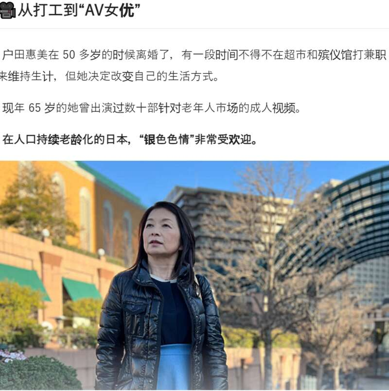
明天在哪，没有人知道。人都是会老的，也都是会死的。
可是，老了之后呢？
有人困于老年无处消解的性压抑；有人晚年投奔怒海只为赚取养家的米。
韩国有一部电影《酒神小姐》，65岁的性工作者素英，送走了瘫痪在床老客户最后一程。
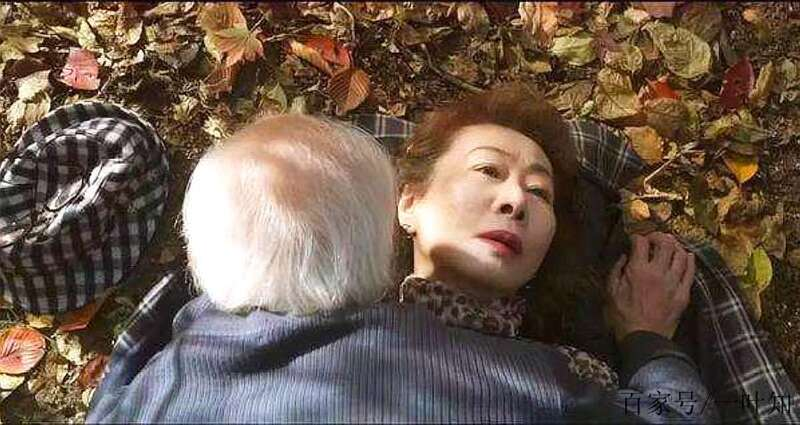
在《三峡好人》理，寻找妻子的煤矿工人韩三明，被问了那句“兄弟，玩不玩小姐”。
他们是不一样的，他们却好像也没什么不一样。
在一部有关老年风俗产业的电影《茶飲友達》里，有一个场景是疗养院里卧床不起的老人把手放在老妓的胸部。
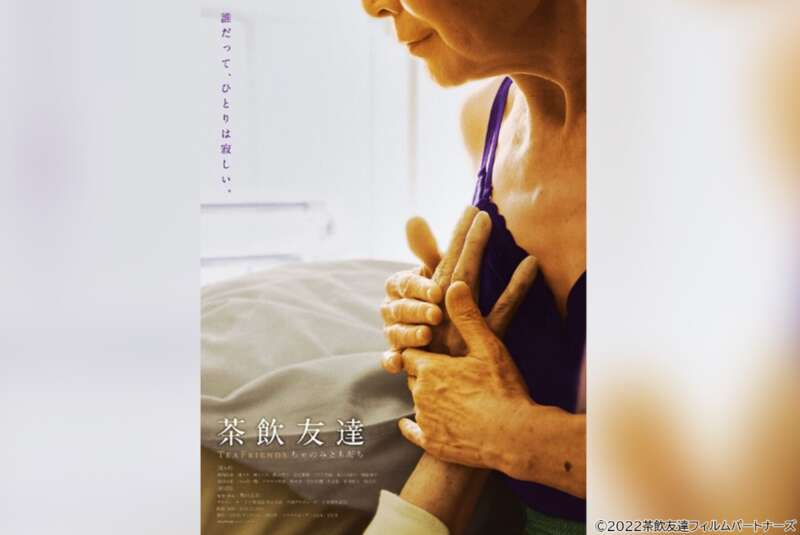
这一幕是充斥着欲望的，但在欲望下涌动的则是一种温情。
导演表示，人与人之间身体接触的现状，其实早已超出了性欲的范围。
人们终其一生寻找他人的原因，其实可以从老年人的性取向中看出。
说到底对温暖和与某人接触的渴望是人类最自然的一种情感。
可问题是，如今的我们到底要怎样才能填补内心的空洞呢？
参考资料：
亚洲：日本和韩国正面临老年贫困的困境【经济学人2024.05.04】